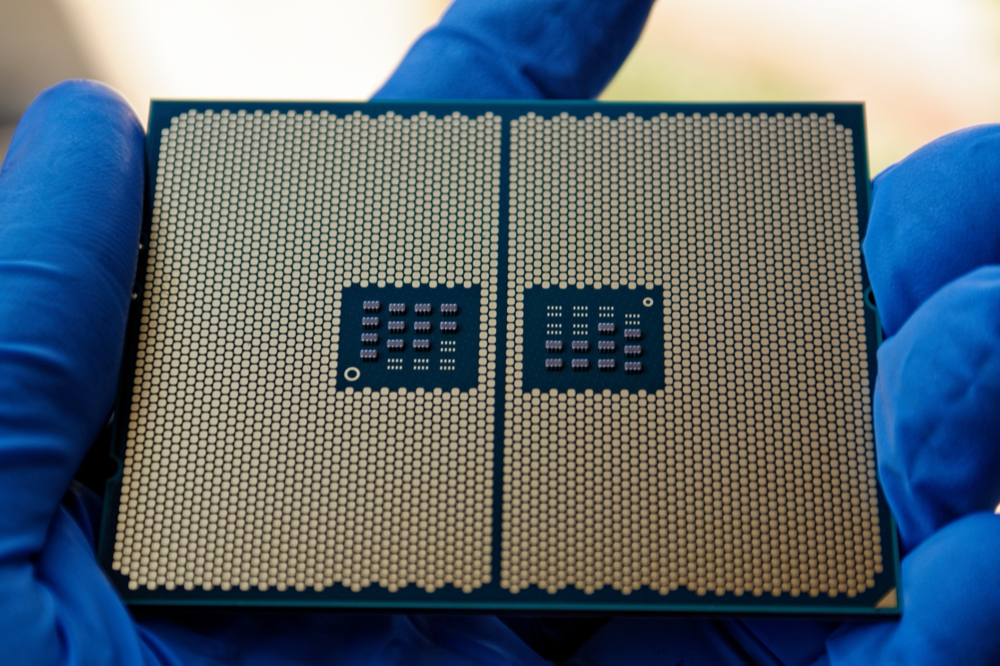

Dr. Muhammad Faiz Bukhori
Driving innovative research, transforming education
Glasgow PhD-qualified engineering academic and researcher with nearly 20 years of faculty experience and RM1M in competitive research funding. Specializes in semiconductor device modeling, applied AI and deep learning for engineering systems, and modernizing engineering education.
Get in touch
01 / About
Bridging fundamental research and real-world impact
I am an academic and researcher at the Faculty of Engineering and Built Environment, Universiti Kebangsaan Malaysia. My work sits at the intersection of semiconductor physics, artificial intelligence, and engineering education.
With a University of Glasgow PhD and nearly two decades of academic experience, I have contributed to over 40 peer-reviewed publications, secured more than RM1 million in research funding, and built collaborations spanning industry, government, and international institutions.
Beyond the laboratory and lecture hall I lead corporate communications for the faculty, mentor national robotics teams, and write for national newspapers on technology and society — work that carries engineering into public debate.
Education
02 / Research
Semiconductors, artificial intelligence, engineering education

Semiconductor Devices
Modelling, simulation, and characterisation of nano-scale MOSFETs and FinFETs, charge-trapping degradation, thin-film solar cells, and graphene–CNT hybrid nanostructures.
Artificial Intelligence
Deep learning for autonomous vehicle control, medical image segmentation, facial-recognition attendance, and smart POS automation using computer vision.

Engineering Education
Online distance learning, Arduino-based hands-on modules, and entrepreneurship integrated into engineering curricula with Stevens Institute of Technology, US.
Funded research · at a glance
-
Integrating AI with Glycemic Response Testing and Nutrition Composition Analysis for Nutrient Assessment of Malaysian Meals
Geran Universiti Penyelidikan UKM · Co-researcher · 2025–2027
RM 60,000
-
Peningkatan Ketepatan Segmentasi Teknik Kontur Aktif Chan-Vese dalam Pemetaan Unjuran Imej Perubatan
MOSTI Fundamental Research Grant · Co-researcher · 2023–2025
RM 118,000
-
Generasi Muda Berinovasi Melalui Modul Arduino
Program STEM dan Minda UKM · Co-researcher · 2023–2025
RM 25,000
-
Next Generation Lighting for Bicycles with Enhanced Visibility
Geran Translasi UKM · Co-researcher · 2023–2024
RM 79,500
-
Autonomous Steering and Throttle Control of Self-Driving Vehicles using End-to-End Deep Learning
Geran Galakan Penyelidikan UKM · Project Leader · 2018–2020
RM 20,000
-
MyCOMS Electric Car Sharing System
Toyota Auto Body Malaysia & Universiti Putra Malaysia · System Developer · 2016–2018
RM 150,000
-
Surface Modification with Nanostructures and Nano-Scale Thin Film Coating for Enhanced Optoelectronic Conversion
Dana Impak Perdana UKM · Co-researcher · 2016–2017
RM 250,000
-
Study of Charge Transport in Graphene–Carbon Nanotube Hybrid Structures for High-Performance Electronic Devices
MOSTI Fundamental Research Grant · Co-researcher · 2015–2018
RM 83,000
-
Development of Non-Toxic Thin Film Solar Cells and Mini Modules Over 15% Conversion Efficiency
MOSTI Science Fund · Co-researcher · 2015–2017
RM 223,000
-
Development of Online Student Attendance Monitoring System Based on QR Code and Mobile Devices
Geran Projek Tindakan Strategik UKM · Project Leader · 2013–2016
RM 10,000
-
Development of 3D Nano-FinFET Simulator
Geran Galakan Penyelidik Muda UKM · Project Leader · 2012–2015
RM 40,000
Industry partnership

MyCOMS Electric Car Sharing System
2016–2018 · RM 150,000 · System Developer
An electric car-sharing platform integrating embedded systems, real-time fleet management, and user mobile applications — built with Toyota Auto Body Malaysia and Universiti Putra Malaysia, showing how academic research translates into a viable commercial product.
National consulting

Mega Science 2.0 — Electrical & Electronics Sector
2013–2014 · Academy of Sciences Malaysia
A national strategic study assessing the role of science and technology in Malaysia's E&E sector — identifying growth areas, R&D gaps and governance structures, and informing national policy and investment priorities.
View final report ↗03 / Innovation
Four copyrighted systems, led from concept to deployment
Registered software copyrights · Universiti Kebangsaan Malaysia
04 / Teaching
Courses, curriculum and open lectures
Undergraduate
- IC Fabrication Processes
- Micro-Electromechanical Systems (MEMS)
- Analog Electronics
- Circuit Theory
- Engineering Economics
- Project Management
- Fundamentals of Entrepreneurship
Postgraduate
- Nanoelectronic Devices
- Microfabrication Technologies
Curriculum work includes an ODL self-learning module for Nanoelectronic Devices, Arduino-based hands-on modules, and a new entrepreneurship course co-developed with Stevens Institute of Technology, US. Lecture recordings have been published openly on YouTube since 2013.
Lecture channel ↗Recorded lectures
All lectures ↗


05 / Press
Engineering in the national conversation

New Straits Times · July 2022
"Automation can spur growth, employment opportunities" ↗

New Straits Times · December 2022
"An 'A' for AI in education" ↗

New Straits Times · September 2023
"Dare we aim for a mission to the moon?" ↗

Astro Awani · Live television
Panellist — National Budget 2015 discussion on the electrical & electronics sector
Utusan Malaysia · Print
MyCOMS Electric Car Sharing System with Toyota Auto Body Malaysia
06 / Leadership
Faculty service
Administrative roles · Faculty of Engineering & Built Environment, UKM
Faculty-wide strategy for research visibility — bulletins, popular-science writing, social media.
Built the Nanoelectronic Devices online module for UKM's ODL platform.
Quality assurance and accreditation of engineering programmes against national and international standards.
Organisation, public relations and technical review for faculty-hosted events.
Developed a new Fundamentals of Entrepreneurship course and its inaugural delivery.
Interviewer for a competitive national scholarship programme.
07 / Awards
Distinctions, appointments and invited platforms
Awards & appointments
International Reliability Physics Symposium, Anaheim, CA — "The Relevance of Deeply-Scaled FET Threshold Voltage Shifts for Operation Lifetimes"
SAMS smartphone application for student attendance
Asas Cuisine Sdn Bhd & Hemos Resources
Institute of Microengineering and Nanoelectronics (IMEN), UKM
Academy of Sciences Malaysia
Invited platforms & public engagement
- Three New Straits Times opinion columns on automation, AI in education and space ambition (2022–2023)
- Live panellist, Astro Awani — 2015 national budget and the E&E sector
- Invited speaker, Malaysia–Japan Seminar on Sustainable Technology (2016)
- Invited speaker, UKM Forum on Education Technologies (2015)
08 / Community
Outreach, mentoring and volunteer teaching
CRYsTaL@UKM — Robotics & Coding Outreach
Volunteer teacher and webmaster nurturing young scientific talent through computer programming and robotics education, reaching schoolchildren across Bandar Baru Bangi since 2009 — with participants going on to international robotics competitions.
- Robotics and coding taught at 3 schools
- MakeX Malaysia Robotics Competition, 2018 & 2019
- Mentored national teams to international competitions
- Co-authored the CRYsTaL programming books
- Member, Hemophilia Society of Malaysia — educational bulletins and community awareness


09 / Publications
Recent peer-reviewed work, 2021–2026

Development of an Automated Student Attendance System Based on Real-Time Facial Recognition Technology
Muhammad Faiz Bukhori, Chook Shun Kent, Ng Lee Ni, Nasharuddin Zainal, Mohd Hairi Mohd Zaman, Seri Mastura Mustaza
Jurnal Kejuruteraan, vol. 38(2), pp. 985–993
Evaluating Digital Communication Skills and Attitudes Toward Online Learning Among Engineering Students, UKM
Muhammad Faiz Bukhori, Nasharuddin Zainal, Seri Mastura Mustaza
Innovative Teaching and Learning Journal, vol. 9(1), pp. 296–305
Development and Accuracy Evaluation of a YOLOv4-Based Food Detection Model for Smart IoT Refrigerators
Muhammad Faiz Bukhori, Lee Xiao Xian, Nasharuddin Zainal, Seri Mastura Mustaza
Jurnal Kejuruteraan, vol. 36(5), pp. 1849–1857
Development of a POS System with Computer Vision for Automated Retail Checkout
Nasharuddin Zainal, Muhammad Faiz Bukhori, Aeisha Danella Lemi Gordon, et al.
Jurnal Kejuruteraan, vol. 36(4), pp. 1451–1457
Transfer Learning-based Weed Classification and Detection for Precision Agriculture
Nurul Ayni Mat Pauzi, Seri Mastura Mustaza, Nasharuddin Zainal, Muhammad Faiz Bukhori
International Journal of Advanced Computer Science and Applications, vol. 15(6), pp. 440–448
Evaluating Final-Year Student Classroom Communication at the Faculty of Engineering and Built Environment, UKM
M. F. Bukhori, M. F. I. Mohd-Nor, A. H. Ismail
Jurnal Kejuruteraan, vol. 35(4), pp. 843–848
Evaluation of Architecture Student Classroom Communication at Universiti Kebangsaan Malaysia
M. F. Bukhori, M. F. I. Mohd-Nor, M. M. Tahir, A. H. Ismail
Journal of Design+Built, vol. 15(1), pp. 45–52
Writing for the public
10 / Contact
Get in touch
Institution
Faculty of Engineering & Built Environment, Universiti Kebangsaan Malaysia · Kuala Lumpur, Malaysia
Driving innovative research, transforming education.